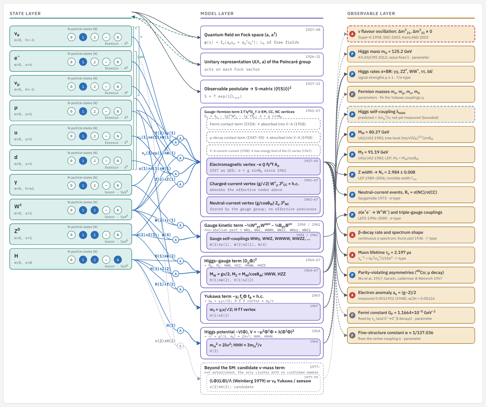

Particle physics as a graph that grows step by step
A state / model / observable concept graph of particle physics, built in thirteen steps from one-particle quantum mechanics (1925) to the electroweak Standard Model with its Higgs sector (2012), and clustered at the end into the terms of the Standard-Model Lagrangian. Part of the Great Epistemic Network project.
Open the latest version Read the paper (PDF) Source on GitHub

Step 12 of the graph: the model layer clustered by Lagrangian term, with the Fermi, muon-decay and V−A nodes absorbed inside the gauge–fermion term.
What the graph contains
State layer
What the theory says can exist. One node at first (the one-particle Hilbert space), then Wigner's irreducible representations of the Poincaré group, then one Fock sector per field species with its occupation ladder |0⟩, |1⟩, |2⟩, …, |N⟩. Sectors are split (ν → νe, νμ), replaced (n, p → u, d) and added (W, Z, H) as the history demands.
Model layer
What acts on states and predicts observables: framework nodes (unitary evolution, the observable postulate, the field construction) and interaction nodes, which are terms of the Lagrangian. An interaction node is effective when its coupling is dimensionful (Fermi's GF), fundamental when it is a term of the renormalizable Standard Model, a candidate when no observation selects it. In the final step the fundamental nodes are grouped into clusters, one per Lagrangian term.
Observable layer
What is measured: spectra at first, then decay widths, cross sections, masses and couplings. Each carries a badge: A observed before explained, P predicted before observed, F calibration (the measurement fixes a parameter). An observable with no model edge has a red dashed ring: it is the to-do item that drives the next model node.
Routes and edges
Interaction nodes are entered by AND routes: blue lines from the occupation-number nodes of several sectors meet at a junction (∧) and enter one node, e.g. n(1)∧p(1)∧e(1)∧ν̄(1) into Fermi's contact term. Every edge names its mathematical connection; hover or click an edge on the page to read it. Model → observable edges are predictions (solid) or calibrations (dashed); model → state back-edges partition or build the state layer.
Versions and what changed
Each version is frozen at its own address; latest/ always opens the newest. Every page has a version bar at the top; earlier versions show a notice pointing to the newest. The manifest is versions.json.
How to read it
- Use Next step / Previous or the arrow keys. Each step has its own address (
#step-7). - The rail on the right gives the step's title, years, driver (anomaly, symmetry, model response, prediction, clustering), what changed in each layer, the narrative and the references.
- Click a node for its formula, description, instances, edges and references; hover an edge for its relation; click an edge to open the relation in the rail; Escape returns to the step.
- A productive order for a student: read Steps 1–2 for the kinematics; at Step 3 look for the red ring and ask what model node could reach it; at Step 4 click the field node and the sectors; from Step 5 on, hover every new node's route and observable edges; at Steps 8–9 watch the model column shrink and grow; at Step 12 follow the lineage arrows from Fermi's node to the charged current; read Step 13 for the counts.
Why build this
This repository belongs to the Great Epistemic Network project, which has three aims.
- Generate research ideas automatically. An edge that the literature should contain but the graph lacks is a research target; here the neutrino-mass term (no established edge) and the Higgs self-coupling (an edge with no observation) are the open items.
- Make reviewing a field easy. The field becomes thirteen steps one can walk through, with every claim attached to an edge and every edge to a reference.
- See a field through its review. The graph is drawn, not only listed, and its history is visible as operations: partition, extend, merge, absorb, cluster.
Science starts from observations; observables hint at the state of a system; hypotheses about how states produce observations become models once written as mathematics; the loop observe → hypothesize → feed back → observe turns hypotheses into a theory. The graph records that loop, and the paper reads ten rules of evolution off it.
Paper, data and code
- Paper (PDF): the graph, the historical walk-through, the rules of evolution, the clustered final graph, and a reader's guide with annotated screenshots. LaTeX source in
paper/(XeLaTeX); every table and number is generated from the data. - Graph data v1.1 (JSON) · v1.0 · per-step statistics · catalogue of nodes, edges and routes
tools/build_derived.pyregenerates the statistics, the catalogue and the paper's tables from the JSON.
Scope: QED and the electroweak sector with the sectors νe, e, νμ, μ, u, d, γ, W±, Z0, H. The strong sector (Yukawa's pion exchange and its absorption into QCD) is left for a later version.